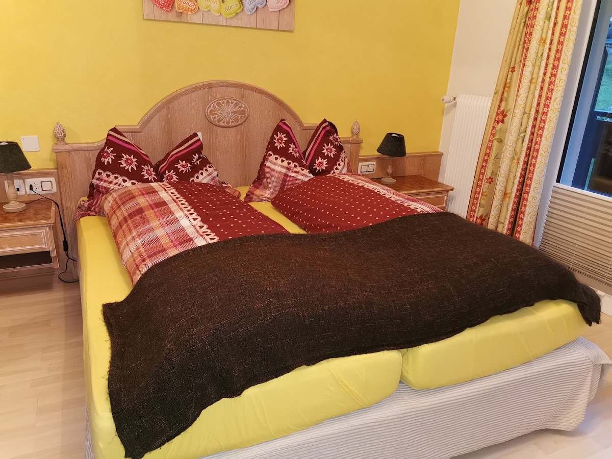
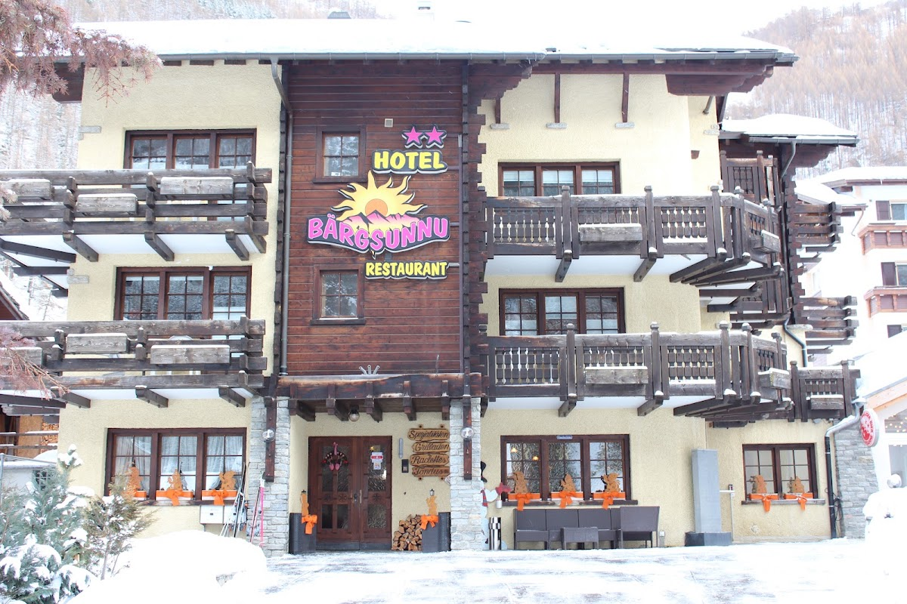
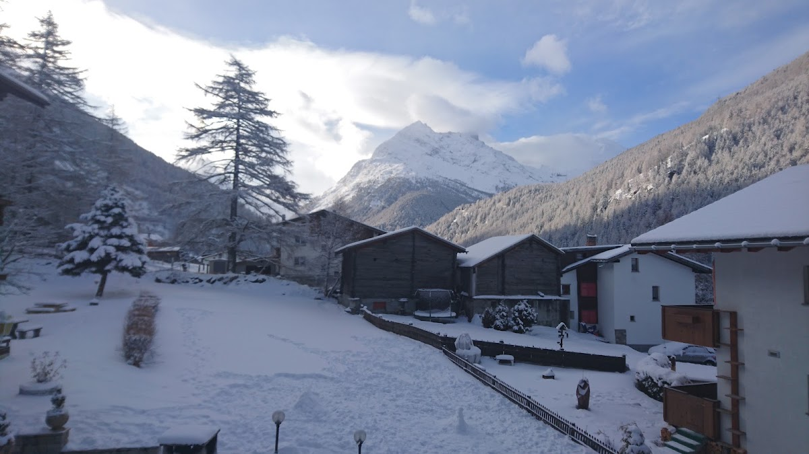

Erholsame Tage im Saastal genießen
Entspannen Sie in ruhiger Lage mit traditioneller Schweizer Gastfreundschaft und guter Küche.

Tamatten, 3910 Saas-Grund, Switzerland
027 957 25 18
4.8 · 191 Google
Über unser Haus
Das Hotel-Restaurant Bärgsunnu liegt zentral und dennoch ruhig in Saas-Grund. Gäste schätzen die familiäre Atmosphäre und die bodenständige Schweizer Gastfreundschaft. Im Restaurant werden großzügige Portionen serviert. Die Zimmer sind einfach, bieten aber alles Notwendige und sind sauber. Ein Garten mit Grillmöglichkeiten lädt zum Verweilen ein. Das Haus ist aktuell vorübergehend geschlossen.
Ihr Aufenthalt bei uns
Was Gäste schätzen
Großzügige Portionen
Im Restaurant werden Speisen in großzügigen Mengen und guter Qualität serviert. Gäste loben besonders das Frühstück und Abendessen.
Familiengeführte Atmosphäre
Viele Gäste fühlen sich wie bei einer traditionellen Schweizer Familie aufgenommen. Der persönliche Kontakt steht im Mittelpunkt.
Einfach und sauber
Die Zimmer sind schlicht eingerichtet, aber sauber und funktional. Alles Nötige für einen angenehmen Aufenthalt ist vorhanden.
Die Zimmer

Die Zimmer sind einfach gehalten und bieten alles, was man für einen Aufenthalt im Saastal braucht. Sauberkeit und Funktionalität stehen im Vordergrund. Im persönlichen Umgang erleben Gäste eine bodenständige und herzliche Atmosphäre.
Lage
Im Herzen des Saastals
Das Hotel befindet sich in zentraler, aber ruhiger Lage in Saas-Grund. Die Umgebung ist ideal zum Entspannen und für Ausflüge in die Natur. Eine Bushaltestelle mit Verbindung nach Saas-Fee liegt in der Nähe.

Kontaktieren Sie uns
Bei Fragen oder für weitere Informationen stehen wir gerne zur Verfügung. Rufen Sie an oder schreiben Sie uns, wenn Sie mehr wissen möchten.
027 957 25 184.8
191